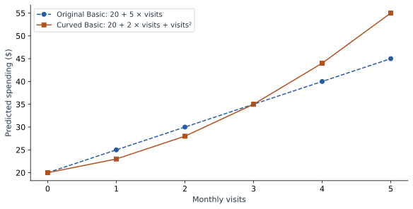

How Linear Models Learn Curves
Our original model adds 5 dollars for every additional visit. That is easy to explain, but it may be too restrictive. Suppose frequent visitors tend to buy increasingly expensive extras. We can describe a curved relationship while keeping an equation whose parts we can inspect.
Add one new column
For this chapter, use a separate illustrative model:
We have specified these coefficients to make the arithmetic clear. They are not the result of refitting the four observed spending amounts from Part 1. The input definitions are unchanged: $v$ is visits and $p$ is 1 for Premium.
| Customer | Visits | Visits² | Premium |
|---|---|---|---|
| Asha | 1 | 1 | 0 |
| Ben | 1 | 1 | 1 |
| Cara | 3 | 9 | 0 |
| Dev | 3 | 9 | 1 |
| Maya | 4 | 16 | 1 |
For Maya, the prediction is 20 + 2 × 4 + 16 + 10 = 54. Her visit-related contribution has two parts, 8 and 16. Together they contribute 24.
Why is this still a linear model?
Imagine handing the fitting algorithm three columns named visits, visits squared, and Premium. The model multiplies each column by one coefficient and adds the results. It is linear in those coefficients, even though one input column is a nonlinear function of the original visits measurement.
That distinction is useful in practice. Feature engineering chooses the columns; linear regression fits their weights. A squared term lets the prediction curve as visits increase.
| Visits | 2 × visits | Visits² | Basic prediction |
|---|---|---|---|
| 0 | 0 | 0 | 20 |
| 1 | 2 | 1 | 23 |
| 2 | 4 | 4 | 28 |
| 3 | 6 | 9 | 35 |
| 4 | 8 | 16 | 44 |
| 5 | 10 | 25 | 55 |
The consecutive increases are 3, 5, 7, 9, and 11. At four visits, one more visit raises the Basic prediction from 44 to 55, an increase of 11. The coefficient 2 is only the linear term; it is not the entire per-visit effect.


Work out the change before naming it
Compare the predictions at $v+1$ and $v$, holding the plan fixed. The intercept and plan term cancel:
With $v=4$, this gives 11, matching our table. If you know calculus, the instantaneous slope is $2+2v$, which is 10 at four visits. That is a slope at a point; the full step from four to five visits includes a changing slope and therefore adds 11.
Explain the original measurement as a group
A reader usually wants to know how visits contribute, not how “visits” and “visits squared” compete. Combine their terms:
Maya: 2 × 4 + 4² = 24 dollars.
When drawing the contribution curve, change both columns together. Moving Maya from four visits to five means replacing 4 with 5 and 16 with 25. Changing only the first column would describe an impossible row: five visits with a squared-visits value of sixteen.
import numpy as np
def predict_curved(visits, premium):
visits = np.asarray(visits)
return 20 + 2 * visits + visits**2 + 10 * premium
print(predict_curved(4, 1)) # 54
print(predict_curved(5, 1)) # 65
print(predict_curved(5, 1) - predict_curved(4, 1)) # 11The same rule applies when plotting partial dependence or generating model explanations: a wrapper that accepts the original measurements should rebuild their derived columns before prediction.
Another option: define understandable groups
A polynomial is not the only way to represent a nonlinear pattern. Here is a different teaching model based on visit groups: 0–1 visits is Low, 2–3 is Regular, and 4 or more is Frequent. Define two indicator columns, Regular and Frequent, leaving Low as the reference.
+ 25 × Frequent + 10 × Premium.
| Visits | Group | Regular | Frequent | Basic prediction |
|---|---|---|---|---|
| 1 | Low | 0 | 0 | 23 |
| 2 | Regular | 1 | 0 | 35 |
| 3 | Regular | 1 | 0 | 35 |
| 4 | Frequent | 0 | 1 | 48 |
This model is easy to describe: Regular adds 12 relative to Low, and Frequent adds 25. The tradeoff is visible. Two and three visits receive the same prediction, while three and four visits cross a boundary and receive a jump. Choose boundaries using the training process and evaluate the resulting predictions; a tidy label alone does not make a good model.
Choose the representation that explains the pattern
Use a smooth curve when the relationship changes smoothly. Use groups when the boundaries have a useful meaning and the loss of detail is acceptable. Features themselves do not have to be normally distributed for linear regression; binning should serve the relationship or explanation, rather than an assumed requirement that every input look like a bell curve.
Both models in this chapter still add the same Premium amount at every visit count. Next we will allow that amount to depend on visits. This creates an interaction between plan and usage.
Sources and worked examples
This chapter develops ideas from the lessons below in A Data Odyssey’s Explainable AI playlist. The customer data, calculations, figures, and interactive examples here are original teaching examples. The creator’s companion notebooks use different datasets.
- Modelling Non-linear Relationships with Regression — Conor O’Sullivan, A Data Odyssey.
- Interpretable Feature Engineering — Conor O’Sullivan, A Data Odyssey.